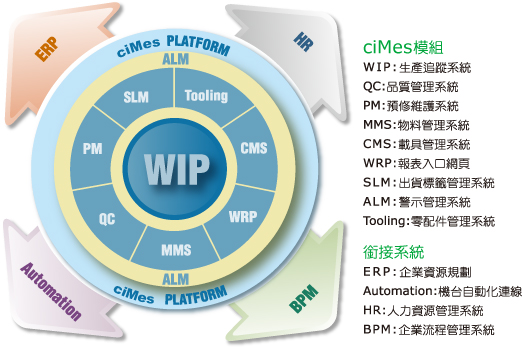

2007/12
建構製造型企業以MES為核心的整體資訊架構
文-林信宇
以一個製造型企業來說，公司分為很多部門，也可能已經導入很多系統，但是最重要的，還是以“製造”為最核心的工作流程，舉凡設備、生管、資材、採購、品管、出貨等部門，還是圍繞著製造生產部門為核心，因此建構配合製造生產部門所需之MES系統，協助並解決製造部門在生產過程中的問題，就成了製造型企業資訊化最重要的工作之一。
什麼是MES系統？
依據國際製造執行系統協會（Manufacturing Execution System
Association，MESA）對MES的定義是“MES提供為優化從訂單投入到產品完成的生產活動所需的資訊。資通推出的ciMes運用及時、準確的資訊，指導、啟動、處理並記錄工廠活動，從而能夠對條件的變化做出迅速的回應、減少非增值活動、提高工廠運作過程的效率。ciMes不但可以改善設備投資回報率，而且有助於及時交貨、加快庫存周轉、提高收益和現金流的績效。ciMes讓MES在企業和供應鏈間，以雙向交互的形式提供生產活動的基礎資訊。”
當然，既然是資訊系統，不可避免地一定會有跨系統的Interface，這些Interface的存在，主要是為了減少人為的介入與重複輸入，並且提供資訊化整合後的即時訊息，讓系統和系統之間能夠互通，而非一個一個的資訊孤島。那如果是以MES為核心的製造型企業，到底會和企業內外部的其他系統有哪些Interface整合或集成呢?
MES & ERP
大部份企業都已導入ERP系統， MES和ERP的整合是幾乎每一家導入這兩個系統的製造型企業一定會做的，這些部份包含了三個主要面向：
(1)訂單轉工單開立：
業務部門接到訂單後，生管部門不管是在ERP或在MES開立工單，皆需將該筆訂單的基本資訊從ERP系統傳送至MES系統，例如客戶名、產品型號、數量、BOM表資訊、客戶成品料號、產品交期……等。
(2)製造成本精算：
生產過程中所使用到的原物料、耗材、人員工時、設備運轉時間……等成本，只有MES系統能夠最即時與詳細地掌控，透過Interface回拋至ERP系統，在ERP結算製造成本時，尤其某些客戶使用ABC成本制度時，相當地有用。
(3)完工入庫拋轉：
MES在製造完成後，將完工的資訊拋回ERP系統，建立ERP系統裡的成品物料資訊，同時對於ERP裡的該張工單或訂單進行生產完成的註記。
MES & HR
HR系統在企業內部分為兩大塊，結算薪資與獎金等日常作業面，以及人力資產配置等策略面。MES系統可以透過與HR系統的結合，提供最詳實與即時的資訊：
(1)產線人員排班：
不同的製造型企業會有不同的排班方式，這些排班的結果應該透過Interface同時更新MES與HR兩個系統，以達到產線人員正確的管理。
(2)產線人員績效獎金：
許多製造型企業對於產線人員採用論件計酬的方式，也有許多企業是將產線人員的績效與發給他們的獎金掛勾，這時如果能透過MES系統即時的將這些數據拋轉至HR系統，將大大減少人為操作或失誤所造成的金額錯誤。
MES & BPM
許多企業在公司內部已有獨立的Work Flow簽核系統，或者是BPM (Business Process Management) 系統，主要處理所有文件的簽核與傳遞，而MES和BPM在許多地方也會有Interface：
(1)ECN工程變更：
產線生產到一半時，如果接到工程變更該如何處理，這時BPM系統如果確認該ECN已全部簽核/審核完畢，可以拋轉至MES系統來處理後續的產線變更，不管是物料的變更或是製程的變更。
(2)報廢的簽核：
“報廢”這個動作是公司成本的浪費，許多時候在生產製造的過程中，當有報廢的產生，尤其是重要Key Part或重要的機種產品，需要走報廢簽核流程。
資通電腦旗艦級的MES產品：ciMes，不僅提供符合各產業需求之完整MES控管功能，更具有與各個外部資訊系統的Interface，可以讓系統和系統間自動做到無縫整合，加速資訊的傳遞與透通，同時減少人為的輸入與介入，以建構與完善製造型企業以MES為核心的整體資訊架構。 
註: 資通、資通電腦皆為資通公司之註冊商標。其他名稱及註冊商標分別為各相關公司所有。